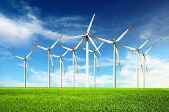

¿Qué es?

La energía eólica es aquella que se obtiene a partir de la fuerza del viento. A través de un aerogenerador que transforma la energía cinética de las corrientes de aire en energía eléctrica. El proceso de extracción se realiza principalmente gracias al rotor, que transforma la energía cinética en energía mecánica, y al generador, que transforma dicha energía mecánica en eléctrica.
Es uno de los recursos energéticos más antiguos explotados por el ser humano y es a día de hoy la energía más madura y eficiente de todas las energías renovables. El término “eólico” proviene del latín “aeolicus”, perteneciente o relativo a Eolo, Dios de los vientos en la mitología griega.
La evolución tecnológica y la innovación han contribuido de manera decisiva al desarrollo de la energía eólica, hasta llegar a los modernos aerogeneradores. Según el informe de 2019 de la Agencia Internacional de las Energías Renovables (IRENA), la energía eólica es actualmente la segunda fuente de energía renovable por producción del mundo (564 GW en total de capacidad instalada) y está en constante crecimiento; en la actualidad, la energía eólica proporcionaalrededor del 5 % de la producción eléctrica mundial, cifra que prácticamente se ha duplicado en los últimos 10 años.